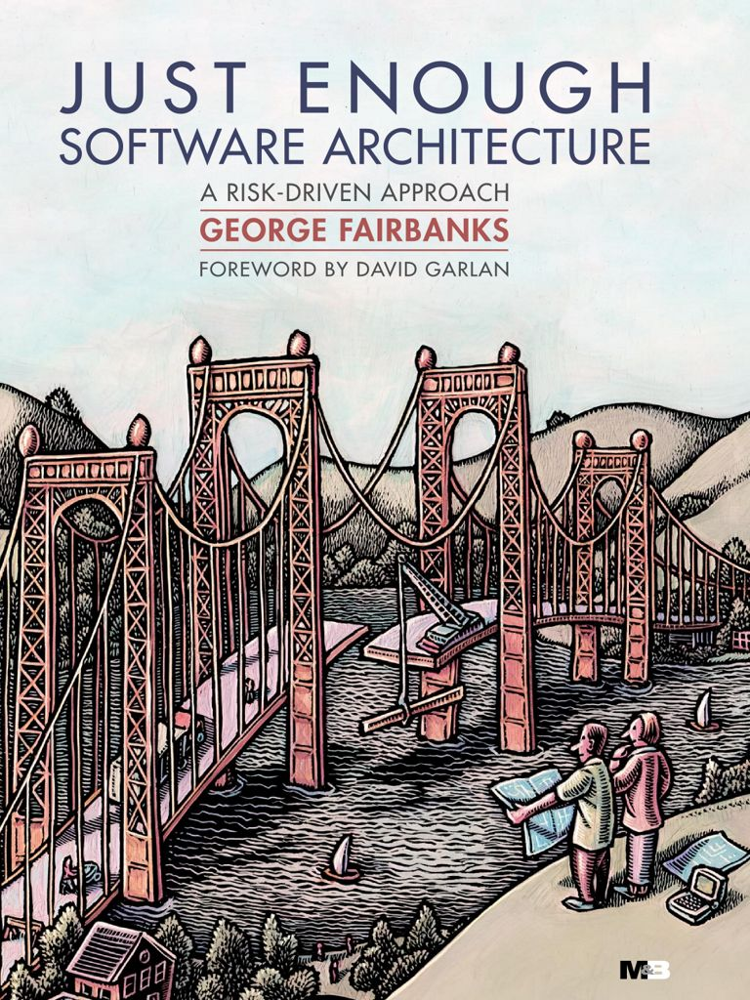

英文原版封面 · 作者官网
BOOK 002 / 风险驱动与架构建模
Just Enough
Software Architecture
A Risk-Driven Approach
怎样判断架构工作做到多少才够？本书以失败风险决定设计投入，再用模型、抽象与约束帮助开发者理解系统、分析取舍。第一章从 Rackspace 三代日志查询系统出发，说明相同功能为何会需要不同架构，以及这些选择怎样改变系统的质量。
适合已有编程经验、开始承担系统设计与维护工作的开发者，也适合希望把设计经验讲清楚的架构师。了解面向对象、UML、用例和设计模式有助于阅读；本书主要关注工程设计与分析。
以英文原书为依据，中文标题与术语为笔记译法。第 1 章依据作者官方试读 PDF；后续章节依据用户提供的 378 页全书 PDF，版权信息已核对，具体范围见各章来源。书籍介绍见作者官网。核查日期：2026-11-06。
阅读目录
16 个主体章节按原书 PDF 目录组织：导论在两部分之前，第一部分从第 2 章开始。
导论Introduction从三代日志查询系统，理解架构取舍与恰当投入第一部分 · 风险驱动的软件架构
Part I · Risk-Driven Software Architecture
软件架构Software Architecture让结构、约束与质量目标连起来 风险驱动模型Risk-Driven Model把设计投入变成有依据的风险判断 案例：家庭媒体播放器Example: Home Media Player让风险真正改变设计工作的顺序 建模建议Modeling Advice让架构判断回到风险、取舍与实际约束第二部分 · 架构建模
Part II · Architecture Modeling
工程师使用模型Engineers Use Models用恰当抽象把现实问题变成可推理的问题 软件架构的概念模型Conceptual Model of Software Architecture关联领域、设计、代码与各自的视图 领域模型The Domain Model用概念、关系与场景澄清问题空间 设计模型The Design Model让边界承诺、内部协作与质量目标相互对应 代码模型The Code Model保留架构意图，核对代码实际兑现的承诺 封装与划分Encapsulation and Partitioning组织多层故事，建立最小充分的边界模型 模型元素Model Elements用图书馆案例串起结构、交互与质量责任 模型关系Model Relationships分清投影、分类与精化，让局部说明相互一致 架构风格Architectural Styles从元素与约束，理解风格带来的质量取舍 使用架构模型Using Architecture Models用场景串联视图，让模型真正帮助分析设计 结论Conclusion以风险校准投入，把建模所得落实到系统前言用于理解写作目的，术语表、参考书目与索引作为辅助资料。